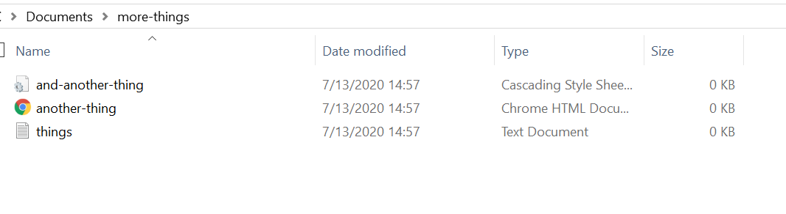

Maria's Guide to the Command Line (On Windows)
-
Download Gitbash
Gitbash allows for Windows Users to use the Git-as in Github-command line.
MAKE SURE YOU OPEN GIT BASH NOT CMD OR GUI, I made this mistake and none of the commands worked for me.

-
Navigating Directories
In order to go to a certain directory use "cd".
Quick Tip: if you're struggling to find a specific directory, go to your files and "Copy address."


-
Inside Directories
The "ls" function allows you to see everything in the directory you're in.

-
Making a Directory
Use the "mkdir" function to make a new directory


-
Making an Empty File
Use the "touch" function to make a new empty file.
The result:
 -
Opening VS Code
Use the "code" function to open VS Code through the terminal